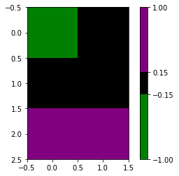

import matplotlib.pyplot as plt
%matplotlib inlineCreate colormap from a list of colors
from matplotlib.colors import LinearSegmentedColormap
custom_cmap = LinearSegmentedColormap.from_list(name="my_cmap", colors=["green", "black", "purple"])
custom_cmapmy_cmap

under
bad
over
from matplotlib.colors import ListedColormap, BoundaryNorm
custom_cmap2 = ListedColormap(name="another_cmap", colors=['green', 'black', 'purple'])
custom_cmap2another_cmap

under
bad
over
# ListedColormap with norm:
norm2 = BoundaryNorm([-1, -0.15, 0.15, 1], custom_cmap2.N)
# BoundaryNorm maps values to INTEGERS instead of floats 0..1
print(norm2(0.5))
f, ax = plt.subplots()
p = ax.imshow([[-0.5, -0.1], [0,0.1], [0.8,0.5]], cmap=custom_cmap2, norm=norm2)
f.colorbar(mappable=p, spacing='proportional')2<matplotlib.colorbar.Colorbar at 0x1d1859349d0>
Merge 2 colormaps
cmap1 = LinearSegmentedColormap.from_list(name="cmap1", colors=["green", "black", "purple"])
cmap2 = LinearSegmentedColormap.from_list(name="cmap2", colors=["blue", "yellow", "orange"])With sharp edge:
import numpy as np
colors_cmap1 = cmap1(np.linspace(0, 1, 100))
colors_cmap2 = cmap2(np.linspace(0, 1, 200))
all_colors = np.vstack((colors_cmap1, colors_cmap2))
cmap_merged = LinearSegmentedColormap.from_list('merged',all_colors)
cmap_mergedmerged

under
bad
over
With smooth transition:
colors_cmap1 = cmap1(np.linspace(0, 1, 3))
colors_cmap2 = cmap2(np.linspace(0, 1, 6))
all_colors = np.vstack((colors_cmap1, colors_cmap2))
cmap_merged = LinearSegmentedColormap.from_list('merged',all_colors)
cmap_mergedmerged

under
bad
over